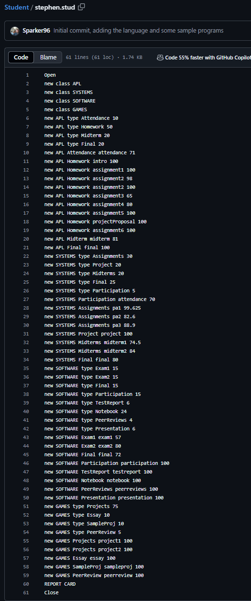
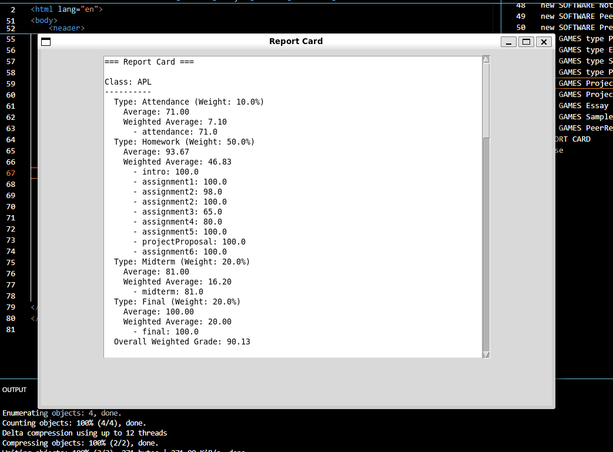

About .student Language
The .student language is designed to help students and educators manage class-related information like assignments, grades, and calculations. With features such as type definitions, grade updates, and report generation, it provides an easy-to-use system for academic workflows.
Features
- Create and manage classes with assignments
- Perform grade calculations and updates
- Generate detailed report cards
- Follows the CRUD model in functionality
Supported Syntax
- Class Definition:
new class <className> - Assignment Type:
new <className> type <typeName> weight <FLOAT> - Assignment:
new <className> <type> <name> grade <FLOAT> - Calculate:
calc <className> (type <typeName> (assignment <assignmentName>)?)? - Update:
update <className> <type> <name> newGrade <FLOAT> - Delete:
delete <className> (type <typeName> (assignment <assignmentName>)?)? - Report:
REPORT CARD - Comments: Lines starting with
//are ignored.
Screenshots
 If You Would Like to Use This Language:
- Download the student.py and student.tx files and either create your own .stud file or use one that's already been created stephen.stud
-
Make sure you have installed.
- Python 3.10.12 or newer
- textX
- Tkinter
-
To parse your .student program and run the student.py interpreter do the following.
- In your student.py file be sure to change the variable inputFile, at the top of the interpreter, to the path of your .stud file. In the terminal cd to your interpreter and run the command python student.py and this should execute your interpreter.